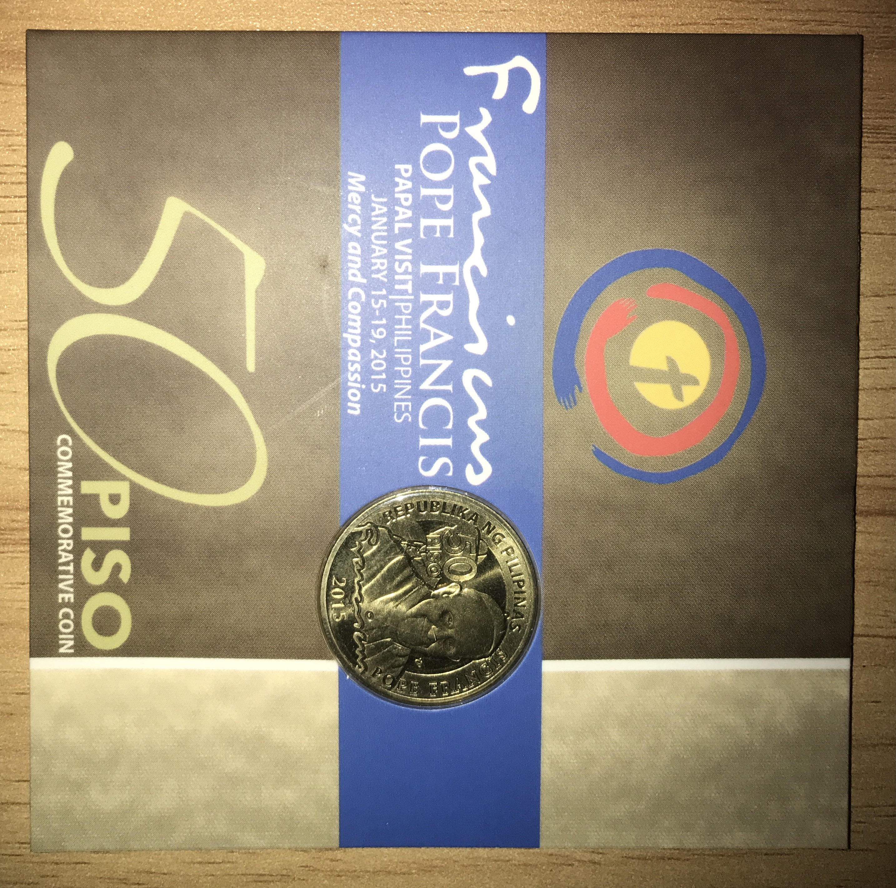
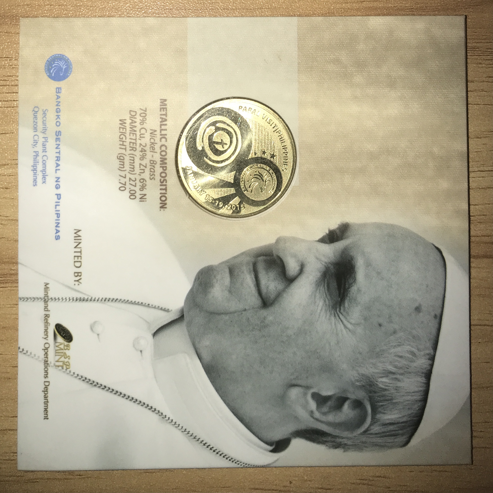

A Coin of a Pope

A notable commemorative from 2015, released by the Banko Sentral ng Pilipinas. It commemorates a visit from the head of the Catholic Church: the ₱50.00 Pope Francis "Papal Visit" coin in nordic gold — and yes, it is legal tender. Shown here is the obverse of the coin, still in the original government packaging. Seen on the face is an image of the pope, along with his signature and the year in which it was minted. They compose the relief.
Circling his image in an arc is the legend, composing of "Republika ng Pilipinas" and "Pope Francis". Connected to it is the mark "50 Piso", denoting the denomination of the coin. The relief of the coin is frosted, with the field in a mirror finish. It seems to possess a small mark, perhaps a mint mark. It looks like a letter in Baybayin.

Here is the reverse of the coin. Note the composition of the metal. "Nordic Gold" is but a fancy term for a gold-colored alloy. Funny. Like the obverse, the relief of the inverse is frosted, while the field has a mirror finish. The legend shows the length of the visit, being "January 15-19, 2015", with the event and location marked above "Papal Visit|Philippines".
Bordered by the legend are walls of text, consisting of the phrase "Mercy and Compassion", marked repeatedly. Both of these encircle two reliefs, with the field separating them. At the bottom, a cross is encircled — hugged by arms. Above, the logo of the BSP can be seen. The field surrounding it made in such a way that it shows stars representing the three major islands and a sun with three rays. Such pertain to the flag.
Being that it is still within the original government packaging, the edge cannot be pictured properly. That said, it appears to be plain. A neat coin, no? Made especially by a country so enamored with Catholicism and for a pope considered to be quite progressive. That is all.